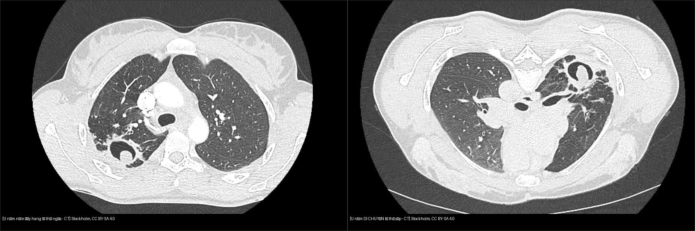
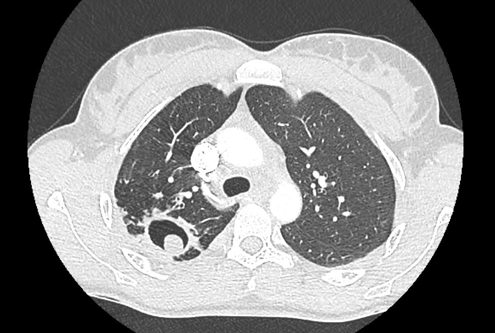
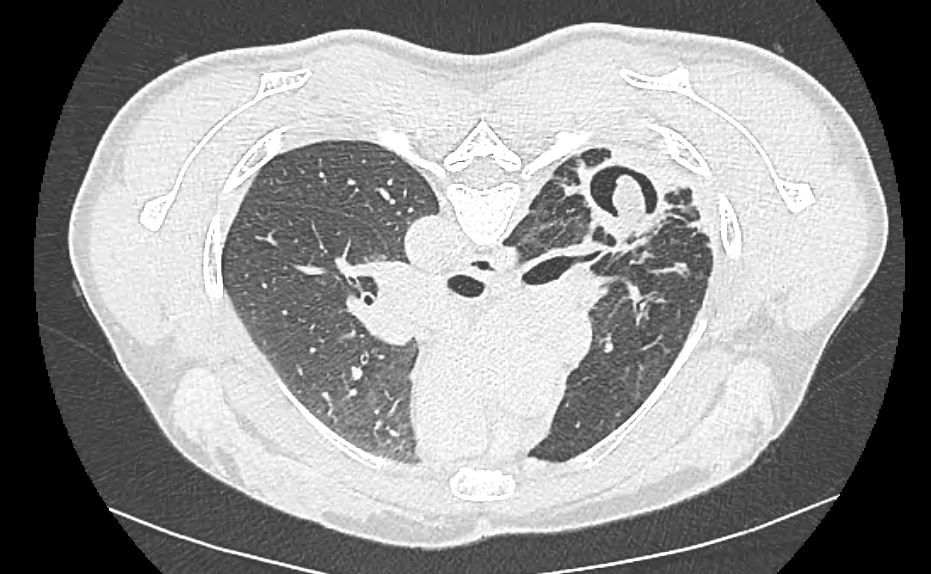
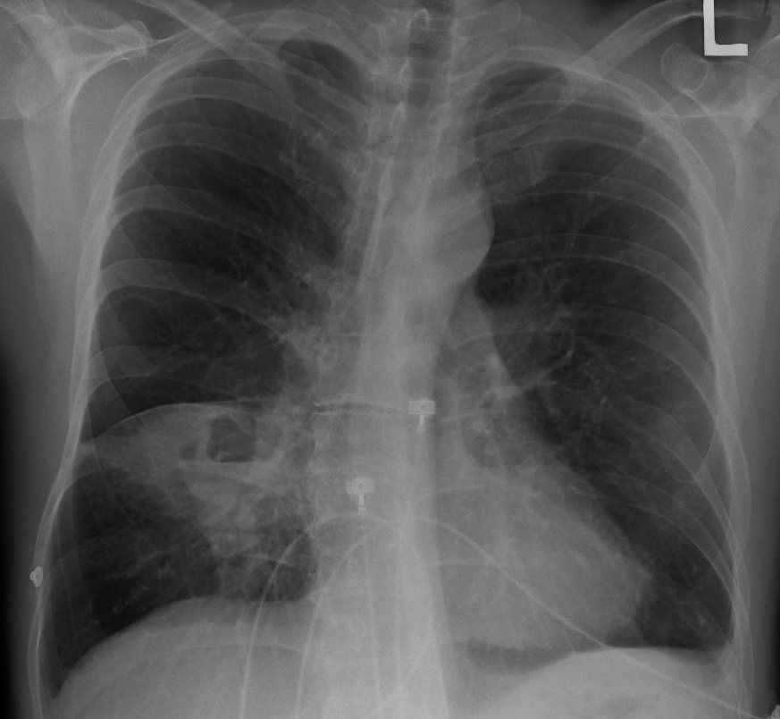
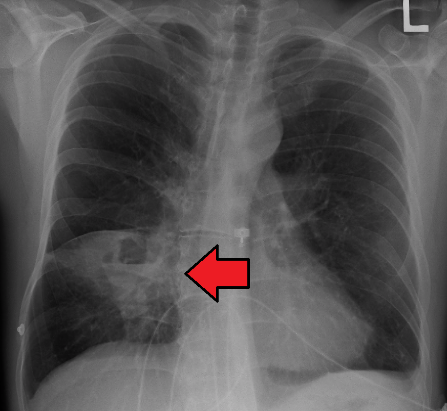

025 — Hang & nấm phổi: dấu liềm khí / Cavitary lesions & Air-crescent sign
Tags: pattern:hang vung:phoi
Mức chắc chắn (certainty): tổng hợp y văn (literature synthesis) — nhóm tự biên từ y văn mở, chưa gắn ca nguyên văn đơn lẻ.
1. Tổng quan — hang hình thành thế nào + ngưỡng thành hang
- Hang (cavity): vùng khí trong tổn thương/nốt/khối do hoại tử thải ra ngoài qua phế quản. 3 câu hỏi mọi hang: (1) thành dày bao nhiêu? (2) có mức khí-dịch? (3) trong hang có gì di động?
- Ngưỡng định lượng nằm lòng (đo tại điểm dày nhất của thành hang — maximum wall thickness, theo Woodring): thành mỏng đều ≤ 4 mm → ~92% lành tính; thành dày gồ ghề > 15 mm → ~95% ác tính (điển hình ung thư biểu mô vảy — SCC hoại tử trung tâm); 5–15 mm là vùng chồng lấp, không kết luận một mình.
- TẠI SAO thành dày gợi ác: u phát triển không đều + hoại tử trung tâm thiếu máu → bờ trong gồ ghề, lệch tâm; lao/áp-xe viêm lan đều → thành mỏng đều hơn.
2. Mẫu hình + chẩn đoán phân biệt theo số lượng & cơ chế (Gamut)
- Hang đơn độc: lao (thùy trên/đỉnh-sau + nốt vệ tinh), K hoại tử SCC (thành dày lệch tâm), áp-xe vi khuẩn (mức dịch + sốt hôi), aspergilloma (hang có sẵn + khối di động).
- Đa hang: nhiễm trùng tạo mủ (viêm phổi hoại tử đa ổ), thuyên tắc nhiễm khuẩn (septic emboli — nốt ngoại vi đa dạng + feeding vessel), tự miễn u hạt GPA/Wegener (hang đa ổ + xoang/thận), di căn hoại tử SCC.
- Gợi nhớ CAVITY: Cancer (SCC), Autoimmune (GPA), Vascular (septic emboli), Infection (TB/bacteria/fungi), Trauma, Youth-congenital (kén bẩm sinh bội nhiễm).
3. Bảng so sánh phân biệt (ma trận đối chiếu)
| Thực thể (entity) | Hình ảnh điển hình | Chốt vào (rule-in) | Chốt loại (rule-out) | Gợi ý xác nhận |
|---|---|---|---|---|
| Hang lao (TB) | Thùy trên/đỉnh-sau, thành mỏng đều, nốt vệ tinh + tree-in-bud, thường không mức dịch-khí | Tree-in-bud + nốt vệ tinh + vị trí trên | Thành > 15 mm gồ ghề + không nốt vệ tinh → nghĩ K | AFB/PCR, CT lát mỏng |
| K phổi hoại tử (SCC) | Thành dày > 15 mm, lệch tâm, bờ trong gồ ghề, không nốt vệ tinh | Thành dày lệch tâm + tiền sử hút thuốc + tuổi | Thành ≤ 4 mm đều + nốt vệ tinh → lao | Sinh thiết, PET-CT |
| Áp-xe vi khuẩn | Mức khí-dịch rõ, thành dày đều, đông đặc quanh, góc nhọn với màng phổi | Sốt cao + hôi miệng + mức dịch ngang | Góc tù + split pleura → mủ màng phổi (bài 040), không phải áp-xe | Kháng sinh, dẫn lưu nếu > 6 cm/kéo dài |
| Aspergilloma (Monod) | Khối nấm trong hang có sẵn + di động ngửa↔sấp | Khối di chuyển khi đổi tư thế | Dính thành mọi tư thế → u/nấm dính, cần mô bệnh | CT ngửa-sấp, tiền sử hang lao cũ, miễn dịch bình thường |

Trái: tư thế ngửa — khối nấm nằm đáy hang, liềm khí phía trên. Phải: tư thế sấp — khối ĐÃ DI CHUYỂN. Nguồn: Stockholm, CC BY-SA 4.0. Ảnh ghép letterbox.Monod sign vs Air-crescent sign thực thụ (đọc chuẩn xác)
- Monod sign: khối u nấm (aspergilloma) nằm trong hang có sẵn (lao cũ) ở người miễn dịch bình thường, di động khi đổi tư thế ngửa ↔ sấp — nghiệm pháp CT 2 tư thế là chốt.
- Air-crescent sign thực thụ: gặp trong nấm Aspergillus xâm lấn mạch máu (angioinvasive) ở BN giảm bạch cầu hạt nặng; xuất hiện khi bạch cầu hồi phục làm mảnh phổi hoại tử tách khỏi thành — dấu hiệu tiên lượng tốt, không cần hang từ trước.
- Cạm bẫy: liềm khí cũng gặp trong nhồi máu phổi khỏi, máu tụ — bối cảnh quyết định.
4. Protocol
- CT ngực lát mỏng + 2 tư thế (ngửa-sấp) khi nghi u nấm trong hang; đo thành hang điểm dày nhất, ghi mm.
- X-quang: phát hiện hang + mức dịch; CT mới đo thành và tìm nốt vệ tinh/tree-in-bud.
- Hang + ho máu: CTA tìm động mạch phế quản giãn (~90% nguồn chảy máu) + bắt buộc tìm giả phình Rasmussen (Rasmussen aneurysm — giả phình nhánh động mạch phổi sát thành hang lao, ~10%) để không nút mạch sót nguồn.
5. Cạm bẫy
- Hang lao cũ xơ hóa dễ đọc nhầm tổn thương mới — so phim cũ, tìm tree-in-bud hoạt tính.
- Áp-xe vs mủ màng phổi (tiêu chuẩn hình học): áp-xe hình cầu nên chiều dài mức khí-dịch trên phim thẳng và nghiêng bằng nhau; mủ màng phổi hình thấu kính dẹt nên mức dịch dài ngắn khác nhau trên 2 bình diện. Kèm: áp-xe góc nhọn + vượt rãnh; mủ màng phổi góc tù + split pleura (bài 040).
- Vùng 5–15 mm: không chốt lành/ác một mình — cộng bối cảnh + PET/sinh thiết.
6. Tự lượng giá — Blind Quiz
Ca 1 — BN HIV+, hang thùy trên phải. Nhìn phim ngửa, mô tả trước.

- Hỏi: trong hang có gì? Liềm khí ở đâu? 3 phân biệt + nghiệm pháp xác nhận?
Bấm để hiện đáp án
- Khối đặc trong hang + liềm khí phía trên — nghĩ aspergilloma trong hang lao cũ. Nghiệm pháp: chụp thêm tư thế sấp xem khối có di chuyển (Monod).
- Đối chiếu phim sấp:

- Khối ĐÃ DI CHUYỂN theo trọng lực → u nấm tự do, không phải u dính thành.
- Nguồn: Stockholm, CC BY-SA 4.0.
Ca 2 — Sốt cao, ho hôi, X-quang có hang mức dịch:

Bấm để hiện đáp án

- Áp-xe phổi vi khuẩn: hang + mức khí-dịch ngang + đông đặc quanh, góc nhọn với màng phổi (khác mủ màng phổi góc tù).
- Nguồn: Doc James, CC BY-SA 4.0.
Bài liên quan chéo
- 001 – Tổng quan hệ Ngực
- 020 – Nốt phổi (nốt hang trung tâm)
- 031 – Viêm phổi mẫu hình (áp-xe, lao)
- 040 – Tràn dịch màng phổi (áp-xe vs mủ màng phổi)
Không dùng để chẩn đoán độc lập khi chưa có người hướng dẫn.